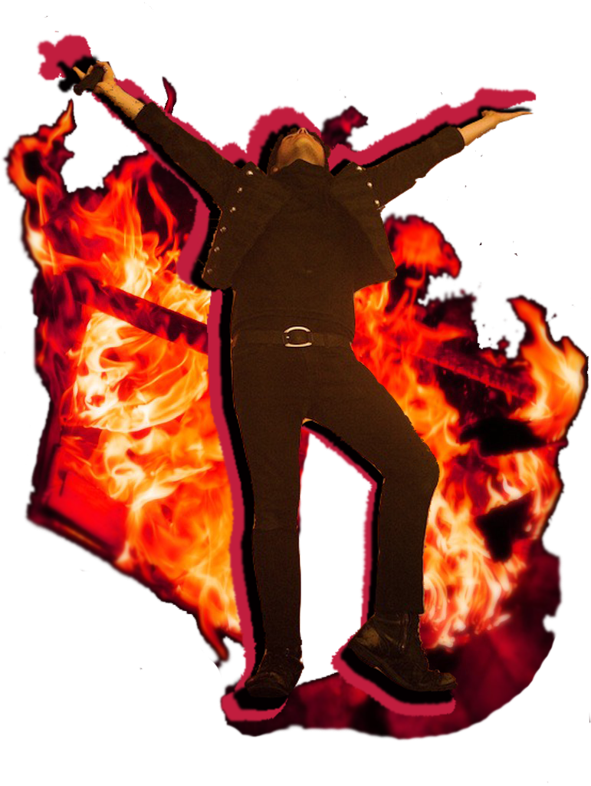

Gerard Way
Gerard Arthur Way (born April 9, 1977) is an American singer, songwriter, musician, and comic book writer. He is the lead vocalist and co-founder of My Chemical Romance from its formation in September 2001 until its split in March 2013. His debut solo album Hesitant Alien was released on September 30, 2014. Way is also the co-founder of DC Comics' Young Animal imprint. He wrote the comic mini-series The True Lives of the Fabulous Killjoys and the Eisner Award-winning comic book series The Umbrella Academy.
Ray Toro
Raymond Manuel Toro-Ortiz (born July 15, 1977) is an American musician. He is lead guitarist and backing vocalist of My Chemical Romance. On January 1, 2015, he released a new song, titled "For the Lost and Brave", on his website, mentioning Leelah Alcorn, a transgender teen who committed suicide, in the blog post.On November 18, 2016, Toro released his debut album, Remember the Laughter, after recording it primarily at his home since 2013.
Frank Iero
Frank Anthony Iero, Jr. (born October 31, 1981) is an American musician who was the rhythm guitarist and backup vocalist of My Chemical Romance and the post-hardcore band Leathermouth. He has a solo punk rock project titled Frank Iero and the Future Violents (formerly frnkiero andthe cellabration and Frank Iero and the Patience). He released his debut solo album titled Stomachaches on August 26, 2014.
Mikey Way
Michael James Way (born September 10, 1980) is an American musician and actor. He is best known as the bassist of My Chemical Romance. He is also the multi-instrumentalist and backing vocalist of rock duo Electric Century. Mikey co-wrote Collapser with Shaun Simon due to begin release July 2019 on DC Comics.